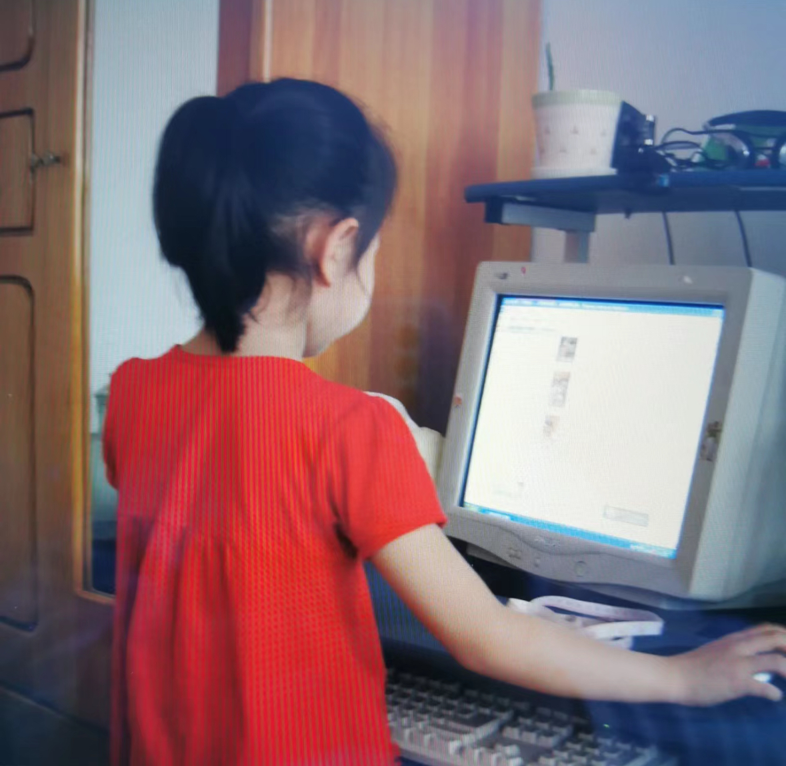

1
In the scorching summer of 2011, my dad took me to his office.

2
As he delved into the meeting with his employees, I lay on the chair before his computer. With nothing better to do, I ended up tapping his keyboard curiously.
3
Meanwhile, a QQ message pops out. Recognizing the familiar platform, I decided to take the plunge and create my own QQ account. Since I had been gathering my friends' account numbers several months before, my deskmate was the first person I added.
4
Once everything was set up, I found myself engrossed in this new digital landscape - every button I pressed and every move I made on that thing felt like stumbling into a new world. During the exploration, I came up with my first internet name, "snowflakes,” and an ice cream as my portrait photo.
5
When my dad finally emerged from his meeting, he teased me about the name and photo, saying he would always want to send me a message during summer only because he could feel the coolness of this “snowflake” and “ice cream.”